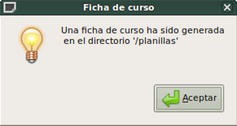
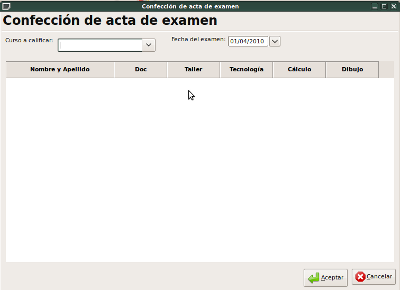
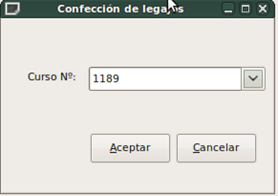

Administrador de Centros
de Formación Profesional

Podremos sacar listados de:
- Estudiantes
- Instructores
- Auxiliares
- Administrativos
- Centros
- Coordinadores
- Cursos
- Seguimiento de egresados
Salvo los dos últimos de la lista, los listados directamente ponen en columnas los registros buscados. Haciendo clic en cada encabezado de columna, podemos ordenar por nombres, apellidos, localidad, etc.
En el caso de los cursos, podremos listar de manera general o particular. En el primer caso se encolumnarán los diferentes cursos que hayan sido ingresados. En cambio, si elegimos listado por número podremos listar todos los estudiantes que formen parte de ese curso.
Y en seguimiento de egresados podemos tener una semblanza cronológica de las actividades desarrolladas por estudiantes.
Todos los listados generados en este menú podrán imprimirse desde la misma ventana con un botón a tal fin.
Por otro lado, tenemos un submenú llamado "Fichas y actas" en el que podremos usar unas opciones más que interesantes:
- Ficha de estudiante:
Es básicamente la misma ventana de alta de estudiante, pero con la diferencia que no podremos editar los datos, solamente podremos verlos, de manera de consultar los mismos. - Ficha de curso completa:
Simplemente elegiremos el número de curso de un desplegable y se generará la ficha de curso correspondiente. Toda la documentación generada se guardará en la carpeta "Planillas" en formato .pdf y con el nombre identificatorio sin lugar a equivocaciones. - Acta de examen completa:
Primero escogeremos el número de curso y se abrirá una grilla que llenaremos con números las notas de los estudiantes. Si estuvo ausente dejamos la celda en blanco. Una vez que completemos todo, se creará el .pdf con el acta de examen. - Confección de certificados:
En desarrollo. - Confección de legajos:
De manera muy simple, se elige de un desplegable por número de curso, y nada más. Se creará una carpeta con el número del curso, y dentro de la misma se crearán dos .pdf por cada estudiante, uno del anverso y uno del reverso de cada legajo.